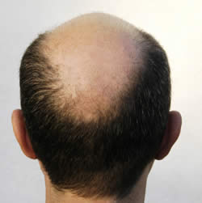
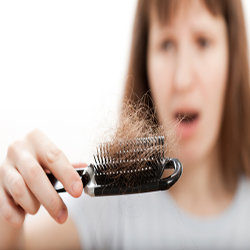

Loss of hair


1. Wash the hair with Tender Coconut water every other day for weeks.
2. Wash hair with coconut milk
Top tips for healthy hair
1. Make oil your best friend - A 20-minute warm oil massage is excellent for dry, rough and frizzy hair. It moisturizes the hair and the scalp, unlike damaging it like other store-bought conditioners.
2. Watch your diet - Experts recommend adding more Vitamin A and Vitamin E rich foods to the diet to promote hair health.
3. Drink up! - Make sure you drink at least 7-8 glasses of water a day; it’ll help nourish and keep your hair looking healthy.
4. Switch to organic - If you’ve been using chemical-based shampoos, try switching to an organic shampoo- it’ll help cleanse and nourish your scalp naturally, and won’t cause any side effect or hair damage.
5. Skip the blow dry - Avoid using extensive hair treatments as far as possible, and if you must, make sure to compensate with good hair care afterward.
6. Use home remedies - . As opposed to chemical-based products, home remedies work better and don’t lead to scalp or hair damage.